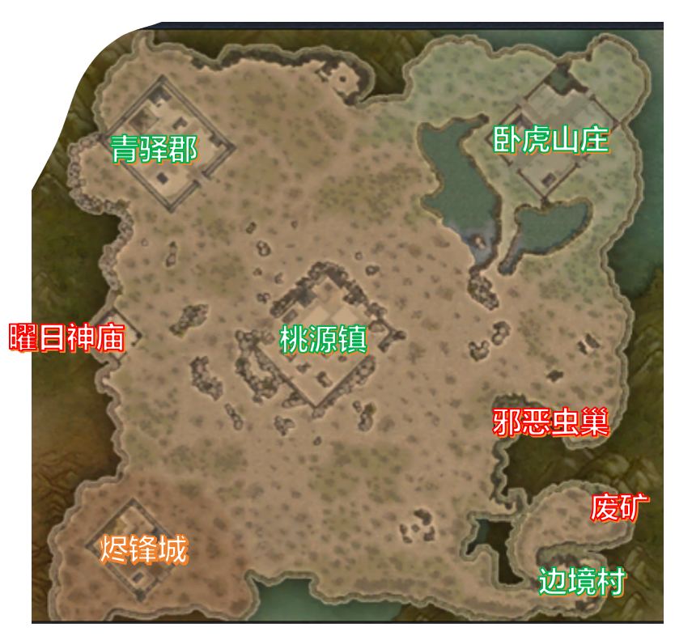
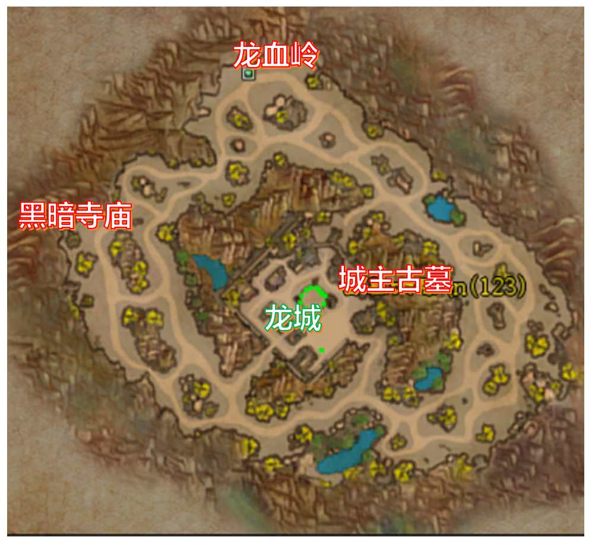
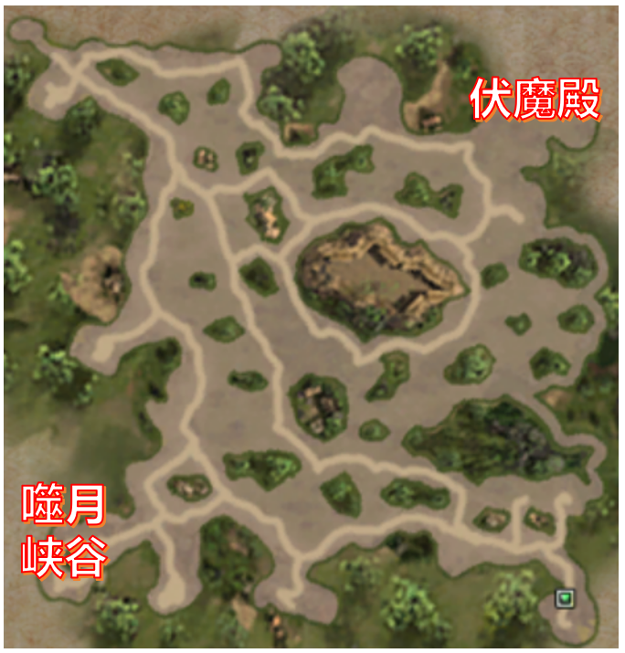
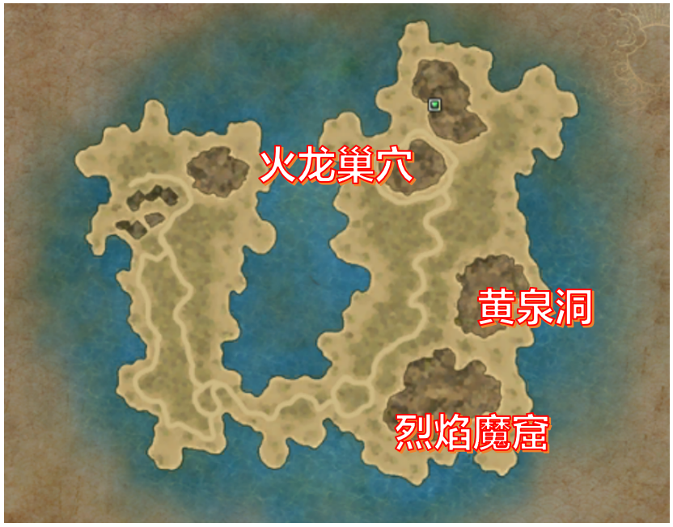

边境村是新手玩家的起点。在这里历练升级后，玩家便可踏入危机四伏的废矿区。此地会刷新Boss 万尸鬼王，常引来各路豪强争夺，务必小心行事。
桃源镇是商业枢纽，聚集着各类商店 NPC，也是玩家摆摊交易之所，仓库功能亦设于此。
卧虎山庄乃各职业师门所在地，玩家可在此精进修为、接受师门功法真传，以及习得高阶技能。
青驿郡设有驯兽师、练功 NPC 及镖师等。玩家可在此开启新的冒险。
游戏前期，玩家可挑战曜日神庙与邪恶虫巢两大地下城，从中获取强力装备武装自己。

作为人类在魔神大陆的前沿堡垒，大漠龙城区域有城主古墓、黑暗寺庙和龙血岭三大练级打宝圣地。然而，此地的怪物更为凶悍，若无高级装备与等级支撑，恐难生还。

经由卧虎山庄的传送门，玩家可抵达迷雾森林，由此通往噬月山谷及伏魔殿。传闻噬月山谷深处盘踞着万恶之源，其魔物异常强大，强烈建议组队前往。

人类的英雄在远航中意外发现了这座神话般的苍海岛。岛上风光旖旎，却暗藏致命杀机。后期地图烈焰魔窟、黄泉洞和火龙巢穴深藏于此，洞穴深处蛰伏着强大的 Boss，唯有最顶尖的勇者方有资格挑战。
不只是，被魔气侵蚀的海底世界中，魔化的鱼人族已登陆苍海岛肆虐，其首领更时常现身海滩，带来腥风血雨。
除上述地图外，更有两大团队 PvP 资源争夺战场：幻境海域与龙血祭坛；以及经典的打宝圣地：未知神殿。
更多地图正在开发中......
《魔神起源》开发组